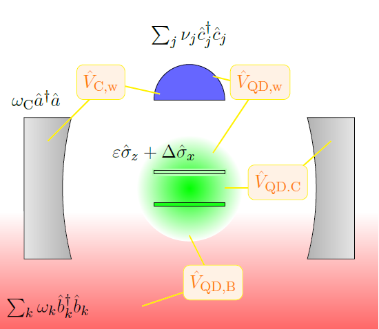
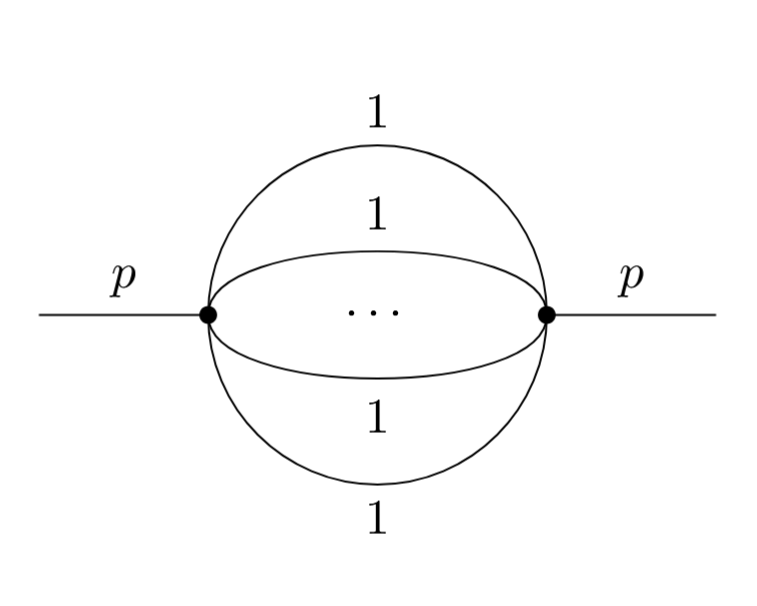
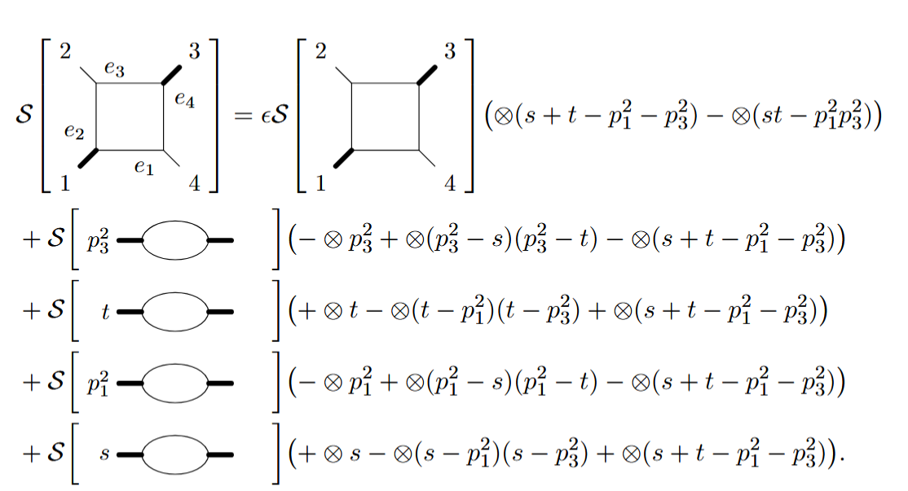
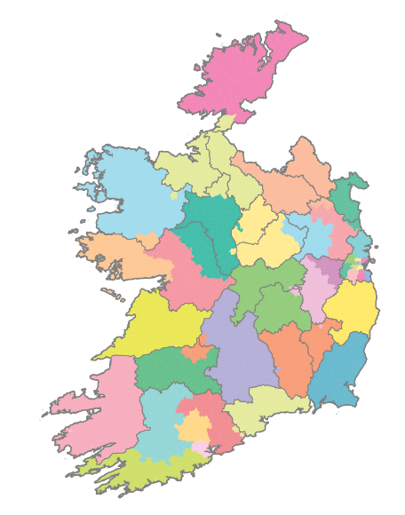
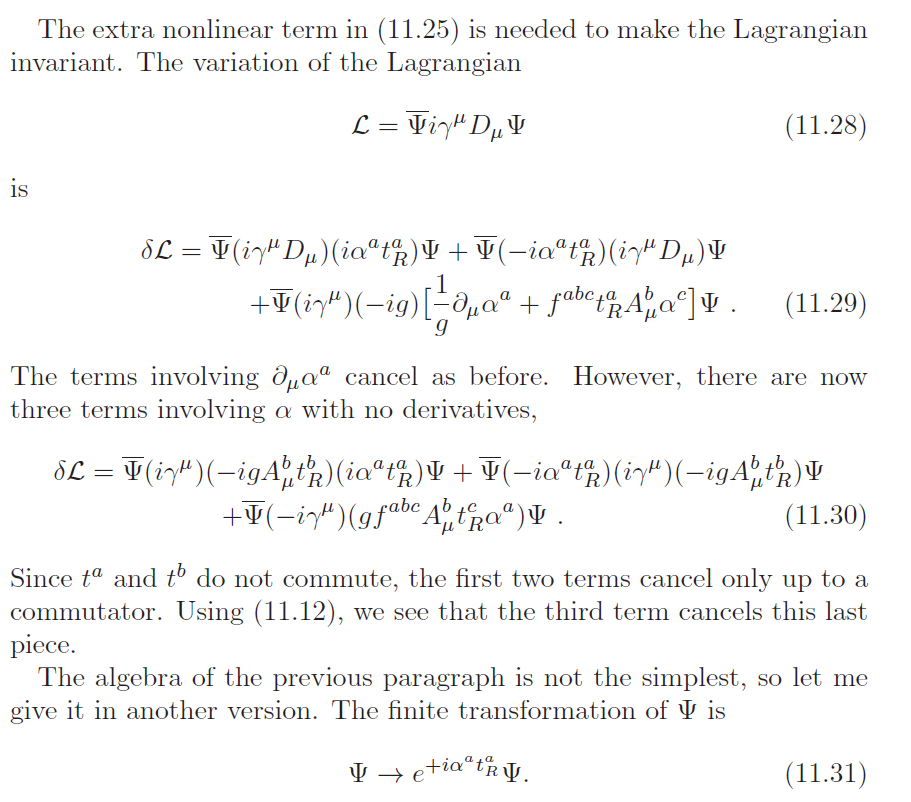
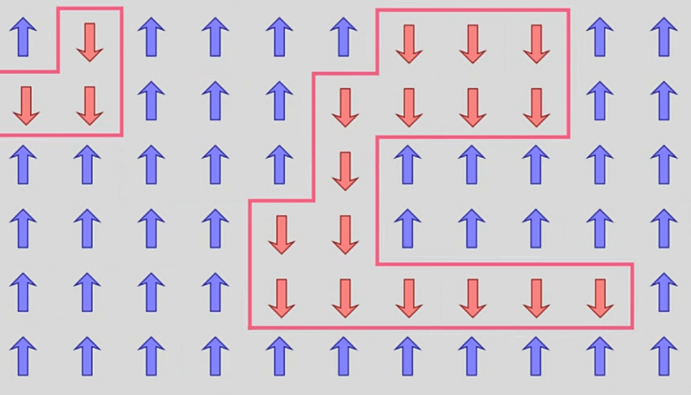
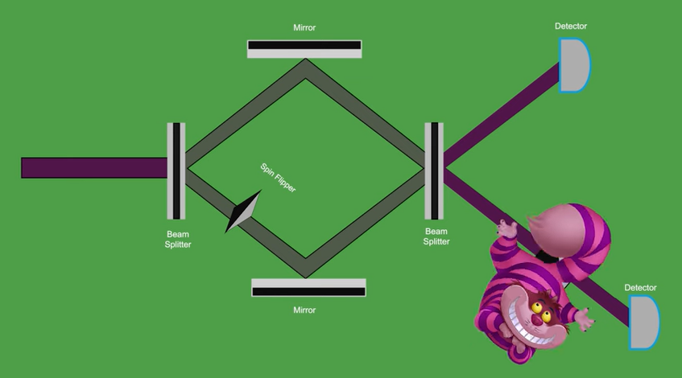

Research
|
Morse-Witten Python Simulation – 2023-24
During my SURE program in 2023, I ran simulations of soft sphere interactions using the non-linear Morse-Witten theory.
I helped to optimise the simulation and to characterise the different emergent structure formed by soft spheres confined in a cylindrical
potential.
Publication
Gallery
|

|
Internship – 2025
For my Master's summer project, I interned at Quandela in Paris. I worked on an internal project investigating if the master equations for modeling the evolution of their single-photon source satisfies thermodynamic consistency using
the counting field framework. The microscopic model involved a 2-level system interacting with one mode of an electric field, coupled
to a phonon bath and waveguide. By applying counting fields and solving for the Redfield master equation, one can find that fluctuations in
thermodyanamic quantities are not generally conserved.
|

|
Undergraduate Thesis – 2024
My undergraduate final year project was supervisor by Prof. Ruth Britto and concerned hypergeometric functions as they appear
as solutions to Feynman diagrams. I investigated if there was a link between twisted period relations for hypergeometric
functions derived from (co)homology theory and quadratic relations for equal-mass sunrise diagrams.
Thesis
|

|
Collaborations
|
Symbol Alphabet of Feynman Diagrams – Summer 2024
I participated in the Hamilton Trust Summer Internship with Eliza Somerville and Alexander Farren,
supervised by Prof. Ruth Britto. We studied the symbol alphabet of one-loop Feynman integrals using the coaction formalism.
Report
Slides
Poster
|

|
Electoral Redistricting – May 2023
I participated in a Real World Mathematical Modelling
hackathon event with Alexander Farren, Eliza Somerville,
and Ben McGloin. We had to redistribute Ireland's electoral divisions to optomise for criteria define in the Irish Constitution. Our
approach used a genetic algorithm to evolve constituency boundaries.
Report
Github
|

|
Communication
|
TA work – 2024-25
During my Master's, I was TAing for the final year TP undergraduate module in the Standard Model. I followed along Peskin's "Concepts
of Elementary Particle Physics" book and held weekly tutorials where I worked through exercise solutions. I maintained a steady attendance
in the audience and the anonymous feedback was positive.
|

|
Critical Temperature of 2D Ising Model – 2023
I and Alexander Farren made a video for the TPSA YouTube channel deriving the critical temperature
of the 2D Ising model.
YouTube Link
|

|
The Quantum Cheshire Cat – 2025
During our masters, I and a classmate made a pop-sci video or our school's YouTube channel. We both wrote and narrated the script, and
I edited the video.
YouTube Link
|

|